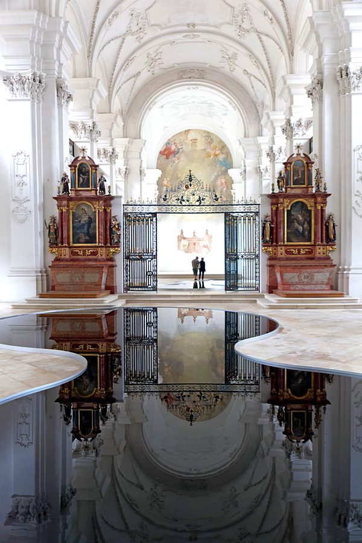

On raconte qu’en 1136 le prévôt du chapitre de Moutier-Grandval, perdu au milieu des bois après avoir poursuivi une laie, fit vœu d’ériger une chapelle à l’endroit où l’animal avait été tué, s’il venait à être secouru. Il le fut en effet et fonda «belle-laie». N’en déplaise aux romantiques, il semblerait que l’étymologie de «Bellelay» repose plutôt sur l’expression du bas latin «bella lagia», belle forêt.
Intérieur de l’abbatiale lors de l’exposition «mise en abîme» de Romain Crelier en 2013. (Bild: Philippe Kneubühler)
Petit aperçu historique
De manière générale, nous ne pouvons rien dire d’historiquement fondé sur les tout débuts de l’abbaye. Sa première mention date de 1142, dans une bulle du pape Innocent II qui confirme ses possessions. L’ordre qui a vécu à Bellelay jusqu’à la fin de ses activités religieuses est celui des Prémontrés. L’histoire de Bellelay étant très riche et mouvementée, les quelques éléments cités ne sont qu’un survol de celle-ci. Pendant longtemps, jusqu’à la fin du 17ème siècle, bien que possédant des terres dans tout le Jura bernois, l’abbaye reste modeste, ses habitants allant de 7 à 15 chanoines. Malgré cela, Henri Ner, abbé du 14ème, obtient même l’autorisation de porter l’anneau, la mitre et la crosse, donnant ainsi à l’abbatiale un rang équivalent à celui d’une église épiscopale. Le 18ème siècle est «l’âge d’or» de Bellelay. La renommée de l’abbaye était internationale, notamment grâce à son pensionnat. Les bâtiments actuels, de style baroque et conçus par l’architecte autrichien Franz Beer, datent également de cette époque. Cet âge d’or est brutalement interrompu par l’invasion des troupes françaises qui ferment le monastère, en 1797. Les derniers prémontrés quittent Bellelay une année plus tard. Suite à leur départ, l’abbaye est abandonnée et utilisée à divers fins, avant d’être rachetée par le canton de Berne en 1891, pour en faire un hôpital psychiatrique qui existe toujours. L’abbatiale, ne servant pas, tombe en ruine avant d’être finalement rénovée dans les années 1950. En 2014, l’abbatiale fête son tricentenaire. Le comité de pilotage du tricentenaire n’a pas ménagé ses efforts pour le célébrer dignement: toute une année durant concerts, ateliers, visites et animations se sont succédés. Le week-end du 18 au 19 octobre, les communautés catholiques, réformées et anabaptistes des cantons de Berne, du Jura et de Neuchâtel ont été rejointes par 5 chanoines Prémontrés de l’abbaye de Mondaye (Normandie, France), dont l’abbé. Ce dernier a également célébré la messe de clôture.
L’abbatiale aujourd’hui
Depuis 1982, l’abbatiale est administrée par la «Fondation de l’abbatiale de Bellelay». Celle-ci a pour but «de mettre en valeur le site historique de l’abbatiale de Bellelay», comme elle l’écrit sur son site internet (voir plus bas). Cette mise en valeur se fait à travers les expositions d’art contemporain qui sont organisées dans l’abbatiale, au rythme d’une par année, et à travers des concerts. Le dit «grand orgue» fut perdu pendant 200 ans, c’est-à-dire démantelé et en grande partie dispersé. Après de longues et laborieuses recherches, il a été reconstruit et finalement inauguré en 2009. Depuis le tricentenaire, la crypte de l’abbatiale abrite une exposition sur l’histoire du lieu. A proximité de l’abbatiale, il y a possibilité de visiter la «Maison de la Tête de Moine» qui honore le fameux fromage, qu’elle produit également. Juste derrière se trouve aujourd’hui un centre équestre. A deux pas de là, l’hôtel de l’ours, qui faisait jadis parti de l’abbaye et qui avait pour but d’accueillir les voyageurs et pèlerins, offre le gîte et le couvert.
Le rayonnement de l’abbatiale
De nos jours, l’abbatiale connaît un succès plutôt régional. Avec le départ des Prémontrés au 18ème siècle, son rayonnement semble avoir quasiment disparu. Le tricentenaire ayant été une occasion de lancer une offensive de charme, de nouveaux efforts ont toutefois été entrepris pour essayer d’attirer les touristes et promeneurs sur le site de Bellelay: l’offre culturelle s’étoffe, les différents sites collaborent et les infrastructures sont remises à neuf. En plus de son influence régionale, l’abbatiale fait tout de même référence à son ancien rayonnement international. L’architecture, de Franz Beer, s’inscrit dans le contexte architectural de l’Allemagne du Sud. En effet, avant de reconstruire presque entièrement Bellelay, Franz Beer se fait une renommée dans tout l’espace germanophone en participant à la construction de plusieurs autres abbayes. Bellelay représente en quelque sorte son apothéose artistique. La visite de chanoines Prémontrés lors du tricentenaire a symboliquement renforcé le lien entre l’abbatiale et ses origines religieuses, qui viennent plutôt de la Normandie. Pour conclure, nous pouvons dire que, s’étant enracinée dans la région et dans la conscience de ses habitants, souligner le caractère international que l’abbatiale de Bellelay a eu, et présente toujours, pourrait être une mission d’avenir.
Lara Kneubühler est étudiante en théologie à l'université de Berne, niveau Master.
Weitere Artikel von {{ author.author }} finden Sie hier:
Pour aller plus loin:
- www.abbatialebellelay.ch
- Schmutz Nicod, Catherine: «L’ancienne abbaye de Bellelay», en: Guides de monuments suisses 74 (2003).